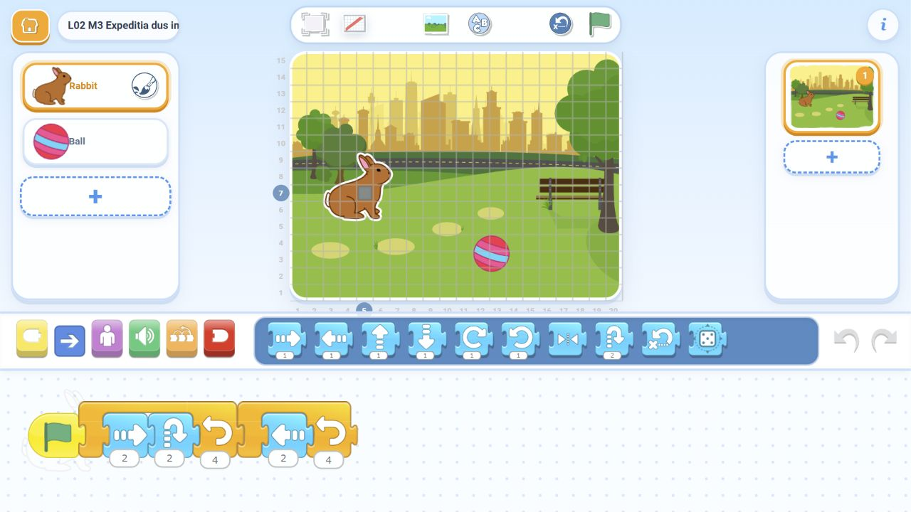

1. Trei patrulări
Dreapta, săritură, revenire. Repetă întregul grup de trei ori într-un singur cadru.
Construim programe cu Repeat. Trei ținte clare, cu o expediție dificilă la final. Folosim Rabbit, Ball și Park din biblioteca instalată.
Copiii creează totul în ScratchJr. Nu distribuim fișiere și nu cerem copierea unor programe greșite.
Exemplu de pornire: O săritură, de mai multe ori · Dribble a Basketball, adaptat pentru lecția noastră.
Minutele 37-45 · 8 minute pentru creația mea: Patrula mea. Inventează un grup de două sau trei acțiuni și repetă-l de două, trei sau patru ori. Alege o distanță mică, cu loc pe scenă. Decide dacă patrula revine după fiecare tur sau înaintează spre o destinație aleasă de tine.
Fiecare copil personalizează un program care îi funcționează. Provocarea dificilă și rezervele rămân disponibile; folosim numai biblioteca ScratchJr.
Ghidul profesorului · pas cu pas →Dreapta, săritură, revenire. Repetă întregul grup de trei ori într-un singur cadru.
Ajungi pe coloana mingii în trei deplasări egale. Sari după fiecare și alege distanța potrivită.
Opt pătrățele în patru deplasări cu sărituri. O a doua buclă te aduce înapoi, fără resetare.
Arată copiilor cartonașul cu ținta înainte să dezvălui soluția.
